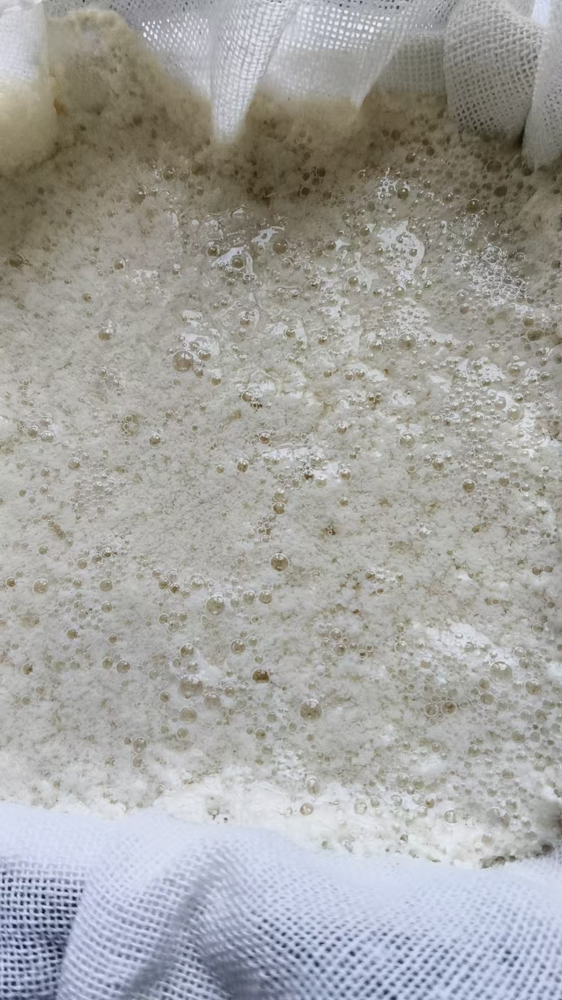
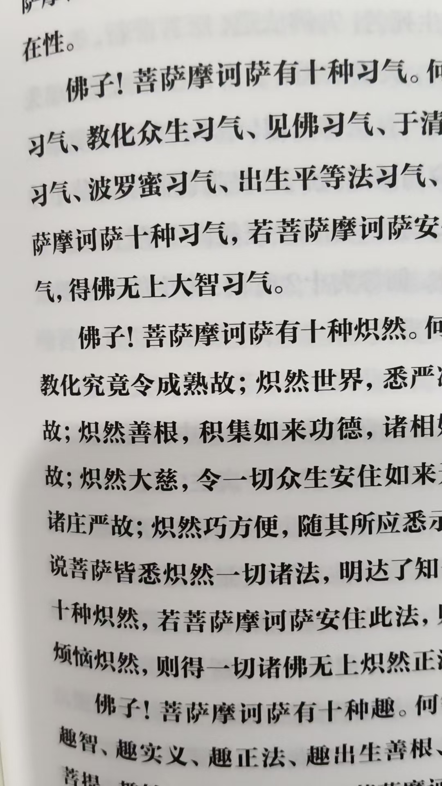
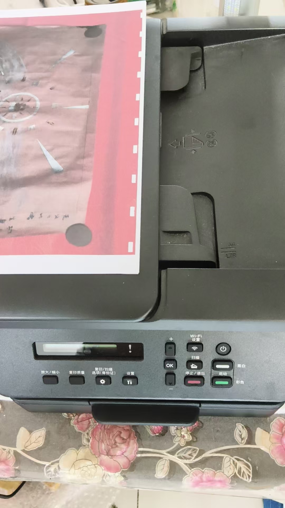
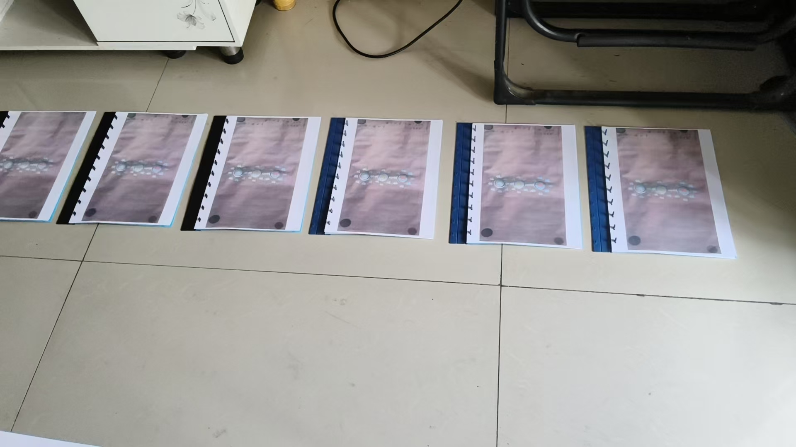
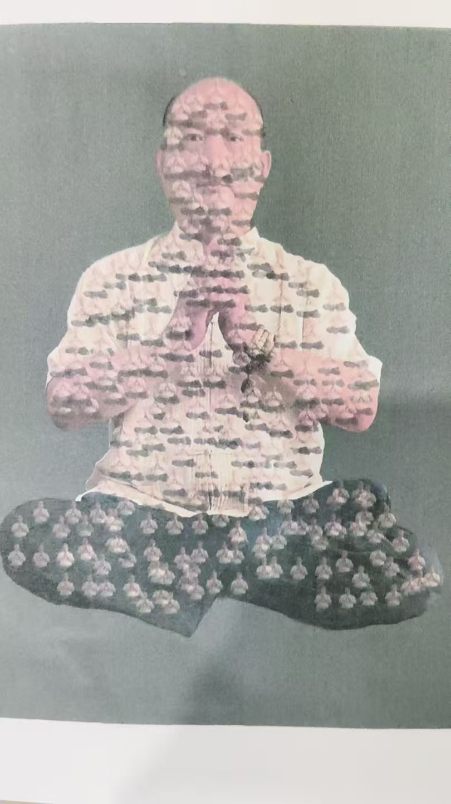
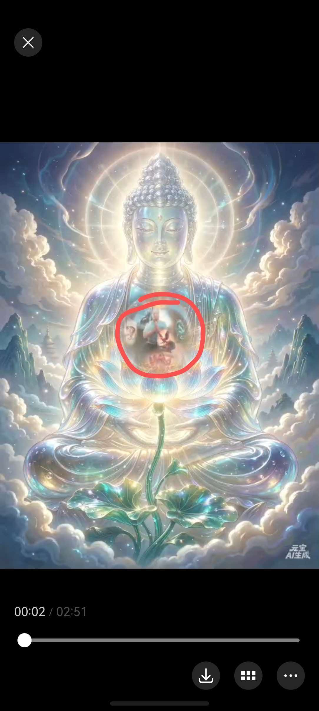

20260915无为法就是心法 珠子放大光明，内外通透，把打坐的自己，也照耀的内外通透
修炼修行符咒术法
同样的做法，同样的原料
本来做豆腐脑
心里想了一下豆腐
结果做出来的是豆腐
没加豆腐的料
[憨笑][憨笑][憨笑]
南瓜中含有钴的成分
有丰富的维生素、氨基酸、磷、钾、钙、镁、锌、硅等微量元素
尤其是钴的成分，可以促进造血功能，食用后有补血的作用
意念力是不是也可以合成元素啦，造物[鼓掌]
无所不能
不过要练的纯熟
线练到给自己填饱肚子就好了[偷笑]
一切贤圣皆以无为法而有差别
无为法就是心法
@呼和浩特 陈呼和 [呲牙][呲牙]
想吃啥，造点啥，别浪费🍚
所以说，菩萨利益大众
是先超越了自己
自己没有烦恼，才去度他人的烦恼
超越了肉体了
吃东北风，省时省力
光体生命
自己还愁的睡不着觉，能度谁
不缺空气[呲牙]
是先解决了自己肉身烦恼
包括，衣食住行，钱财
家人，等等一切
先超越自己
东北的，西北的，东南的，中原的风🌬️，吃过好多了
每风肉体活不了[流泪]
地水火风
人生难得，该吃该喝好玩都去享受，这辈子走完，不知道下辈子还在那一道

人生短暂，及时行乐[强][强]
普慧菩萨问普贤菩萨，菩萨摩诃萨种种有
篇幅很长
我在想，这种种有，我如果有，那我不就是菩萨了
先开眼开悟
哈哈，那你酒要戒[偷笑]
自性本空寂，无二亦无尽，
解脱于诸趣，涅槃平等住。
非初非中后，非言辞所说，
出过于三世，其相如虚空。
——《八十华严经》
no
我还有一种愿，就是享一切可享之福，富贵成就
酒是粮食精华，这点福分都享受不了，成就为了什么
释迦牟尼之前都是苦行，佛祖开悟后已经改善了很多
六祖，那也喝过酒，也吃肉边素
持心戒，
心戒，是心里面不想吗？
肉边素
就是一家人，炒一锅菜，别人吃肉，持戒的人只吃里面的素菜
这就是心里有持戒的心就行
实际上肉颗粒，油，也吃进去了
心里没有
这也不吃，那也不吃，让世俗的人看着怪异
所以，我吃肉喝酒，修炼，教学
让所有人知道，吃肉喝酒不算戒条，也能修成
[呲牙][呲牙]
和尚不能结婚，是福分不够，
不是说过，孙不二元君，结婚，生两个儿子，也修成正果了
佛祖，也结婚生子
这也戒那也戒，唯独钱财不想戒，还求不来
[憨笑][憨笑][憨笑]
这个不太同意，佛祖出家后就没有再碰过女人
不能结婚和不愿结婚有很大区别
是的，我是说，虽然结婚生子了，也能修成
[呲牙][呲牙]是不让结婚
这个说法有问题，有福的人未必一定要结婚
而且不一定想结婚
[憨笑][憨笑]
那要看个人定义，什么是福
为什么有鲧寡多孤这个词
福报
对动物，屎壳郎，吃屎就算福
但是对一切众生，成佛是最大的福报
有一个儿子，或者女儿，想起来，还总觉得缺点什么
子女双全，再就是儿女成群，这都是人理想中的福
不是也有佛菩萨到人间体验的吗
成佛只是想法，修行者多如牛毛，成就者，稀入麟角
牛毛，跟麒麟角的比喻
是呀
佛菩萨下世的，因为有肉身关系，很难自己开悟，如果被魔发现了，一世照样毁掉
一个重点，就是迅速找到自己点化开悟的师傅
菩萨最后化生入世，佛祖早看到有劫数，封印在荷花里
[憨笑][憨笑][憨笑][憨笑]最近我觉得又变了一个自己
可能是有缘的学生要来了
整个身体温热，两手发烫
以前学生来之前，身体会放一米多紫光
放紫光，就是我的最高修为身，跟肉体重合，来教学
这次教学结束后，我就分身，
每个学生身边，安排一个分身，教你们的光身学习
给我分一个[鼓掌][鼓掌][鼓掌]
[强][强][强]
太慢了太慢了
必须尽快提升
赶紧报名🙋
不用报名，人各有分
[呲牙][呲牙]
水平不够也看不见🙈
最少能感觉到大能量团在身边，自己能量也提升
返观内视，开眼开悟
内观证悟，别只说名词
静坐，每天一次一次进去看
怎么去开眼开悟
这是我刚做的图
你的心不够大，不够光明
打坐就这样观想
心眼小[呲牙][偷笑]
这个大佛就是我，真人
真人放大光明，手里捧一朵莲花
看来得打坐了，现在能量都给手机了，一天看6小时
莲花上有一颗明亮的宝珠
宝珠里是你在打坐
这样修，容易出效果
现在不拉手身体也有拉手的感觉了，跳动感，电流感
那是能量足了
电流感，进去看，不就是光吗
珠子放大光明，内外通透，把打坐的自己，也照耀的内外通透
这样去修，这样去修
九转五行都在这个状态里练
[鼓掌][鼓掌][鼓掌]
佛中间的珠子，换成了我
这样练，几天就会有变化
十种狮子吼
十行，十住，十坐，十卧，十观察
这样读经，心越修越细
一坐一天，体验这种心无挂碍，心无烦恼
身上一种微妙的舒适感
只有这样，才不会有任何疾病产生
一会去买点肉馅，把豆腐渣炸成丸子

发现资料还用完了，
手机里底子也没了
复印


打印资料，不禁感慨
我讲的竟然如此准确
一一毛孔，都是我一个分身我佛
谁要说我讲的不对，就用华严经拍他脑壳[憨笑][憨笑][憨笑][憨笑]
要知道，只要是我讲的，都是我实修实证过的
说忙就忙起来了
明天去南京教学
一会还要把资料赶出来
在胸口？还是在腹腔？
在我手心里
在胸外

啊？是在体外啊？不是在胸腔里面？
荷花和珠子也在手心上（体外）？
你坐在荷花上
进入这种景象状态，打坐修炼